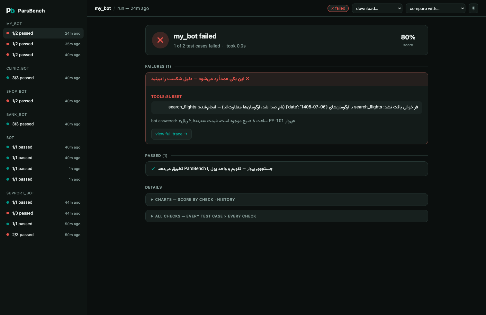

Evaluating your AI app
ParsBench's app evaluation layer tests your Persian chatbot or agent — whatever framework it is built with. It is the part of ParsBench you wire into CI so a prompt tweak that breaks tool calls, leaks a forbidden answer, or quotes the wrong price never reaches production.
English-shaped eval harnesses silently fail on Persian apps: they treat
«۲۵۰ هزار تومان» and «۲٬۵۰۰٬۰۰۰ ریال» as different answers, «۵ مهر ۱۴۰۵» and
2026-09-27 as different dates, and «میروم» / «می روم» / «میروم» as different
words. ParsBench's normalization layer makes those equivalences hold in every
check, on both text answers and tool-call arguments.
Like the rest of ParsBench, the API is class-based: an AppEvaluator holds
your goldens the way a Task holds its dataset, and evaluate() takes the
thing under test — your app instead of a model.
Sixty seconds, no API key
Your app is any function that takes a user message and returns a string, a
Trace, or an OpenAI-format message list:
from parsbench.appeval import AppEvaluator, Golden, ToolCall
def my_bot(message): # stand-in for your app
return [
{"role": "assistant", "tool_calls": [
{"id": "1", "function": {"name": "search_flights",
"arguments": '{"date": "1405-07-05"}'}}]},
{"role": "tool", "tool_call_id": "1", "content": "پرواز PY-101"},
{"role": "assistant", "content": "پرواز ساعت ۸ صبح، قیمت ۲٬۵۰۰٬۰۰۰ ریال"},
]
evaluator = AppEvaluator(goldens=[
Golden(
input="بلیط تهران-مشهد برای ۵ مهر ۱۴۰۵ میخوام. قیمتش چنده؟",
tools=[ToolCall("search_flights", date="2026-09-27")], # Jalali == Gregorian
contains=["250 هزار تومان"], # rials == tomans
forbidden_tools=["book_flight"],
),
])
result = evaluator.evaluate(my_bot)
print(result)
Every filled Golden field switches on its check — there is no separate
metric configuration and no YAML.
Two ways in
# 1. run-for-me: hand evaluate() your function (sync or async)
result = evaluator.evaluate(bot)
# 2. traces mode: run the app yourself, score what happened
result = evaluator.score_traces([trace_or_message_list])
A crash inside your app is reported as a failing app_error check on that
golden — one broken case never aborts the suite. Async apps work everywhere,
including notebooks and servers with a running event loop.
Golden fields
| Field | Check | Passes when |
|---|---|---|
output= |
correctness |
a judge scores the answer consistent with the reference |
contains=[...] |
contains |
each needle appears — normalized, money- and date-equivalent |
not_contains=[...] |
not_contains |
no needle appears (same equivalences) |
format=Model |
format |
the output parses/validates against a pydantic schema |
tools=[ToolCall(...)] |
tools |
expected calls happened; args compared date→number→text |
forbidden_tools=[...] |
forbidden_tools |
none of these tools were called |
context=[...] |
faithfulness |
a judge finds every claim supported by the context |
refuses=True |
refusal |
a judge confirms the request was declined |
max_steps/latency/cost |
budget:* |
the trace stayed within the budget |
check=fn |
custom |
your Trace -> bool | float returns truthy/1.0 |
AppEvaluator(goldens, metrics=["tools:strict", "contains"]) filters or
re-modes checks; unknown names raise instead of silently passing, and Golden
field names (max_steps, refuses, …) work as aliases.
The judge
Deterministic checks always run. Judge checks (output=, context=,
refuses=) need a judge model and skip gracefully without one:
export PARSBENCH_JUDGE=gpt-4.1-mini # any OpenAI-compatible model name
export OPENAI_BASE_URL=... # AvalAI, OpenRouter, Ollama, …
export OPENAI_API_KEY=...
# or judge-specific: PARSBENCH_JUDGE_BASE_URL / PARSBENCH_JUDGE_API_KEY
judge= also accepts any parsbench Model (e.g. an OpenAIModel) or a plain
prompt -> str callable. Judge prompts are authored in Persian and importable
(parsbench.appeval.prompts_fa) if you want to edit the rubrics. The built-in
client retries transient failures and bounds each call
(PARSBENCH_MAX_RETRIES, PARSBENCH_TIMEOUT override the defaults of 5 and
120s). Before trusting judge scores at scale,
calibrate them.
Frameworks
Every adapter is duck-typed — importing it never requires the framework:
from parsbench.integrations import openai_agents, langgraph, pydantic_ai, agno
trace = openai_agents.to_trace(run_result) # OpenAI Agents SDK RunResult
trace = langgraph.to_trace(state) # LangGraph graph state
trace = pydantic_ai.to_trace(result) # Pydantic AI AgentRunResult
trace = agno.to_trace(run) # Agno RunOutput
Anything OTel-instrumented (CrewAI, LlamaIndex, Google ADK, instrumented LangChain) feeds through the universal collector — no adapter needed:
from parsbench.integrations.otel import TraceCollector
collector = TraceCollector()
tracer_provider.add_span_processor(collector)
... # run your app
result = evaluator.score_traces([collector.to_trace()])
Runnable end-to-end examples for each framework live in
examples/, and
examples/industry/
shows vertical-specific evaluations — banking, e-commerce, healthcare, telecom
simulation, and knowledge-base RAG.
Multi-turn simulation
SimulationEvaluator drives your bot with an LLM playing an Iranian user —
taarof openings, toman/rial confusion, Jalali dates, Finglish switches, typos
— then judges the finished conversation against the goal:
from parsbench.appeval import SimulationEvaluator
evaluator = SimulationEvaluator(
goal="خرید بسته اینترنت یکماهه و دانستن قیمت آن",
user="محاورهای+toman_rial_confusion+finglish_switch",
criteria=["قیمت به کاربر اعلام شود"],
simulator_model="gpt-4.1-mini", # the user simulator
judge="gpt-4.1-mini",
)
result = evaluator.evaluate(my_bot) # fn(message) or fn(message, history)
parsbench.appeval.TRAPS lists the named behaviors; free text in the user=
string becomes extra instructions for the simulated user. For finer control,
pass a PersianUser(style=..., persona=..., traps=[...]) and
ConversationGolden objects.
Generating goldens from your docs
from parsbench.appeval import GoldenGenerator
goldens = GoldenGenerator(model="gpt-4.1-mini", adversarial=True).generate("kb/", n=30)
result = AppEvaluator(goldens).evaluate(my_bot)
Questions come in both formal and colloquial register; adversarial=True
mixes digit scripts, Jalali dates and Finglish. Generated goldens carry their
source chunk as context=, so faithfulness is judged automatically.
Calibrating the judge
Before publishing judge-scored numbers, measure judge-vs-human agreement on a labeled sample:
from parsbench.appeval import JudgeCalibrator
calibration = JudgeCalibrator(judge="gpt-4.1-mini").calibrate(
[{"golden": Golden(input="...", output="..."), "output": "...", "human": True}, ...],
prefer_concurrency=True, n_workers=8,
)
print(calibration) # agreement, Cohen's kappa, readable disagreements
CI
result.assert_passed() raises with the failing checks, so goldens are plain
pytest cases (see examples/ci_with_pytest.py):
@pytest.mark.parametrize("golden", GOLDENS, ids=lambda g: g.label)
def test_bot(golden):
AppEvaluator(goldens=[golden]).evaluate(bot).assert_passed()
Run them with pytest or parsbench test (install via pip install
'parsbench[test]'). For flaky agents, evaluate(bot, n_runs=5) repeats each
golden and result.pass_hat_k() gives the tau²-style consistency score;
evaluate(bot, prefer_concurrency=True, n_workers=8) fans independent goldens
out over threads (your app and judge must then be thread-safe).
Results are plain dataclasses with the same conveniences as benchmark
results: result.to_pandas(), result.save(output_path) (also available as
evaluate(..., save_evaluation=True, output_path=...)),
result.diff("out/app_evaluation.jsonl") to track regressions between runs,
and result.to_langfuse() to push per-check scores to a Langfuse instance
(LANGFUSE_HOST / LANGFUSE_PUBLIC_KEY / LANGFUSE_SECRET_KEY).
Viewing runs — parsbench view
Every evaluate() and score_traces() call records its run — full traces
included — into a project-local .parsbench/ store (self-gitignored, plain
run.json + events.jsonl files). Open the viewer:
parsbench view

- Live: runs stream into the UI while they execute; finished runs stay as the archive.
- Checks matrix: goldens × checks with the judge's Persian reasons one click away.
- Trace detail: messages, tool calls (arguments/results/errors),
latency and steps — plus per-run tabs when
n_runs > 1. - Simulation replay: the conversation as an RTL chat, with the goal and traps in play.
- Compare: pick a baseline run to see which goldens regressed and how each check's mean moved.
- Export: download any run as JSON (full traces), CSV (one row per check, Excel-safe UTF-8), or a paste-ready Markdown report.
- Charts: an optional diagrams section — score per check and the app's score history across runs. Dark and light themes, toggle in the top bar.
Recording is on by default; turn it off per call with record=False or
globally with the PARSBENCH_NO_RECORD=1 env var (e.g. in CI). Delete
.parsbench/ whenever you like — it is only the viewer's data.